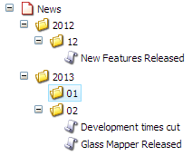
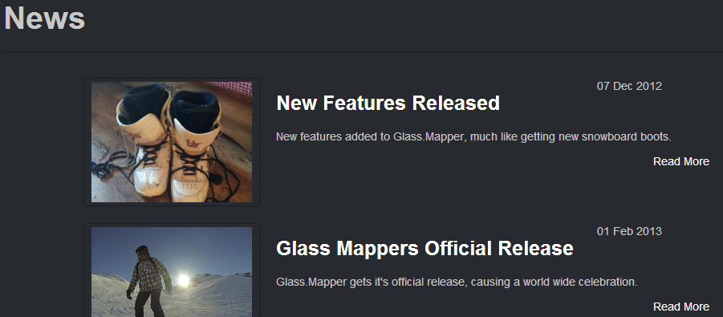

This tutorial will show you how you can enhance you models using the queries.
We haven't yet got a page that lists all the news articles in our news section. We will create a news landing page that lists all the news articles in our news section.
I have changed the news section to store stories in a year/month structure:
We will use the query to select only the news articles and to ignore the folders. The model for the news landing page looks like this:
The IsRelative at the end is important, it tells Glass.Mapper to execute the query relative to the item the class represents, i.e. the news landing page rather than from the Sitecore root. Queries are executed lazily and therefore only populated when the property is called.
When using a query the target property can be an enumerable, like our property, or a single class. If a single class is used the first item returned by the query is mapped.
Now we just need to create our landing page markup, the code behind is below:
And the the ASCX:
If we compile and navigate to the landing page we should see the following result:
This tutorial has shown you how you can use queries on your models to load items from across you Sitecore solution.